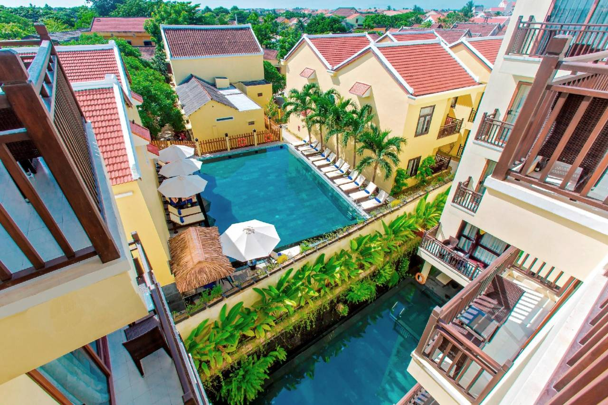
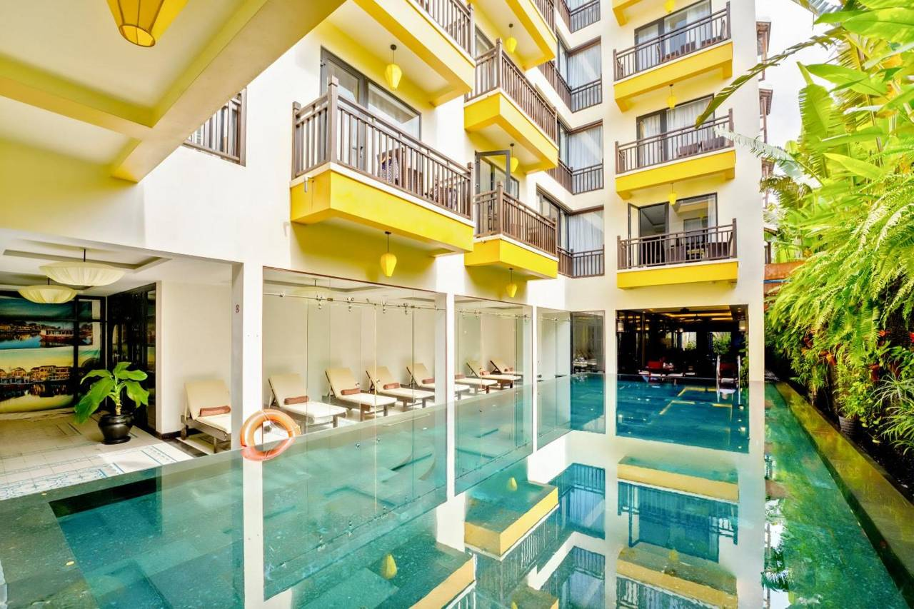

2026-09-30—2026-10-02
01 / 02
CONFIRMED STAY
拥抱集团丝绸豪华水疗酒店
Silkotel Hoi An
会安老城 · 位于会安古城旁 Hùng Vương 街的精品水疗酒店，步行可达怀江与夜市；含水疗设施，适合前两晚会安度假段的节奏。
- 入住
- 2026-09-30—2026-10-02
- 地址
- 14 Hùng Vương, Cẩm Phô, Hội An（会安古城西侧）
- 出行
- 距古城步行约 10 分钟；到岘港国际机场约 45–50 分钟车程